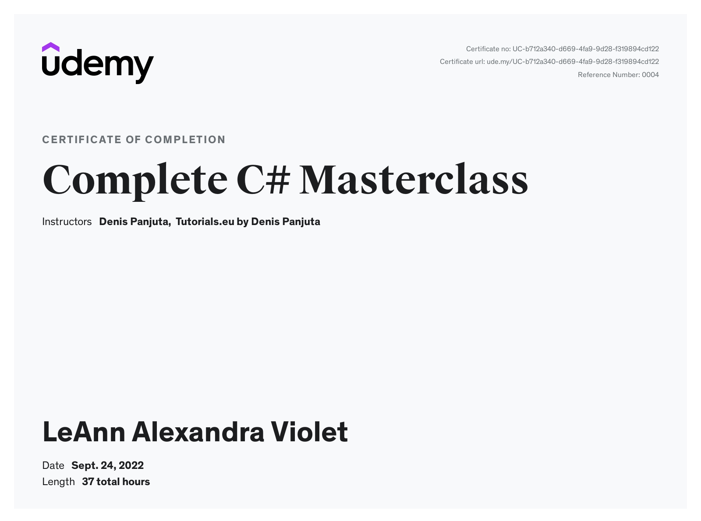
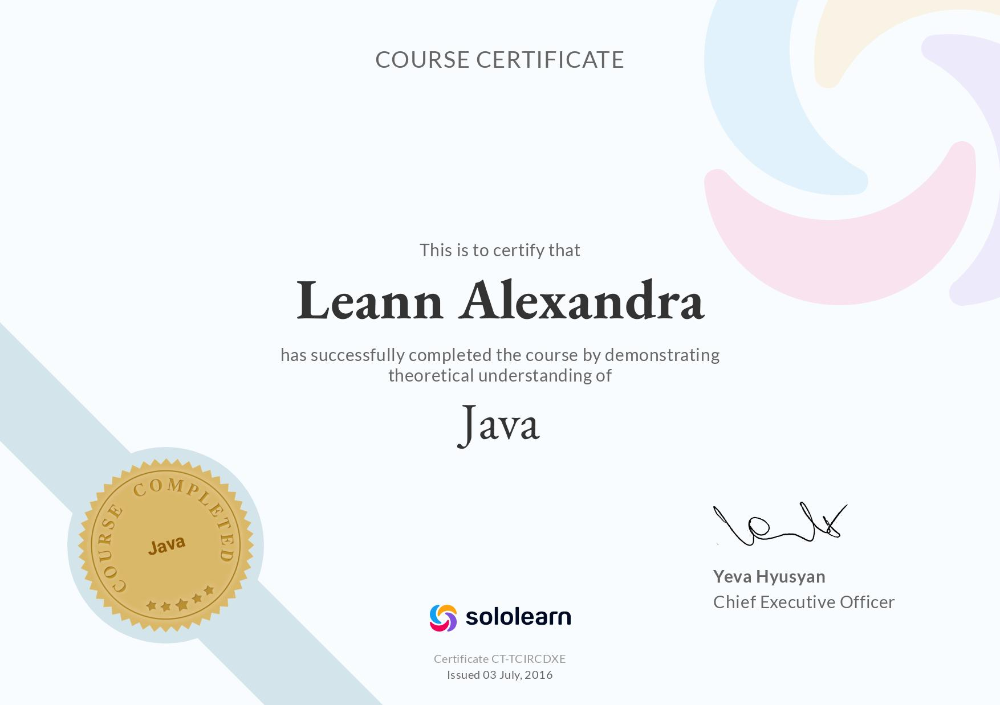
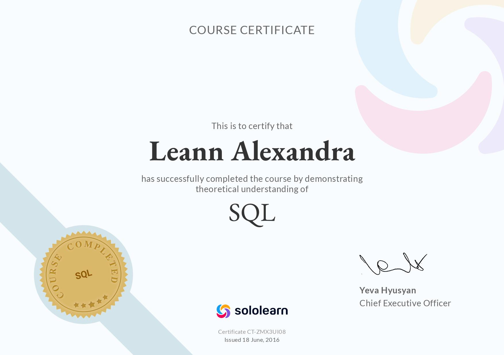

I am actively learning
I like to learn new things. I always knew about HTML and CSS and Javascript, but never got into web
development before. Right now, this page is is what I am building as a part of my learning journey on Udemy I reconfigured my life in 2023
to pick up skills I always knew I wanted to do, but never
had any real world application for. I am doing this..
Currently on my plate - mmhmm delicious 😋
I am actively seeking to improve myself and my understanding of the full stack developer's role and core
competences. Althought I have previously done some "backyard mechmaniac" projects, that would only put me to
shame, I have decided in 2022 to go back and relearn a couple of things. Here is what I am currently
learning in 2023:
- Adavnced SQL Bootcamp - Udemy
- Become a Product Manager | Learn the skills & Get the Job -
Udemy
- Unreal Engine 5 C++ Developer:Learn C++ & Make Video Games - Udemy
Although just having a certificate of completion from Udemy may seem impressive, I assure you I'd
rather leave my 'current learning' as is than rush through without doing all of the projects, spending
enough time to learn all the ins and outs of the subject matter and then focus on what interest me the most.
Usually I like to learn the things that I require for other projects. For example I did a temporary remote
internship with a UK based gaming company, sadly I had to resign as my then career demanded to much time of
me. This prompted me into rethinking what I really want from life and I gave notice and started shifting my
focus to learning.
Completed Learning - Programming Specific
C# Masterclass - Udemy

Proof of basics - SoloLearn


Humble Beginings
I started my programming Journey back in 2006, Gr. 10. We Started with Java, and later
incorporated SQL as part of the course. and I remember the classroom
vividly.
-
Amongst my crowing achievements are:
- I received the Trophy for the subject in 2008 as the top
achiever.
- Placed first in the IT (Programming) Olympiad in Mpumalanga in 2008. Sadly, I didn't
receive news of this until the next round was over. I did learn that proactive checking
up
on
these
kind of
things are beneficial to everyone involved. In my naive mindset still await my
invitation to
the
next round
😅.
Past Accomplishments
Self-published two games to the google playstore (2019). [they have been removed, details below]
TrumpNation
A Tetris clone that leaned heavily on narrative of 'he who shalled
not be
named's drive to build a wall to keep illigal immigrants from entering the country.
My
TakeAways From this project:
-
⚠DO NOT get involved in something political, racist or offensive - not even
for satirical
purposes. There are better ways to appeal to audiences that does not garner strong
disgust or negative reaction.
DO: Be more respectful of people in general.
-
The use of C# and Unity - (Android targeted)
-
The Use of both Google Ads and Unity Ads on the Android Mobile Platform
-
Core Features:
- Infinitely increasing in difficulty
- Ads, which can be disabled
- It kept stats of nearly everything (overengineered)
- The Use of custom UI, pictures and sounds
- Persistent storage
- Ingame currency to "buy" blocks when you need them.
-
Planned Features:
SCRAPPED BECAUSE IT WAS AN OFFENSIVE PREMISE THAT DID NOT ALLIGN WITH GOOGLE'S
POLICIES.
Vertigo
Download
APK (25.1MB)
A 3d into the screen endless runner that used the
gyroscopes of the phone to
steer the ball on a rotating spiral like maze (called pipe). [Now it sounds better than it was]
- Core Features:
- Infinitely increasing in difficulty, Every level is faster and longer
- Ads, which can be disabled
- Use of gyroscopes in the game environment
- The Use of custom UI, pictures and sounds
- Persistent storage
- Different Colored Levels
- Planned Features:
- Google Leaderboards - implemented
- Google Play Services (persistent online storrage)
- Upgraded Pipe elements to connect smoothly (Designed in Blender) - Implemented in a
test
build
Project abandoned after the computer with the source code was stolen, Later removed from
play
store for not keeping up to date with the minimum sdk-versions through updates.
Contact Me